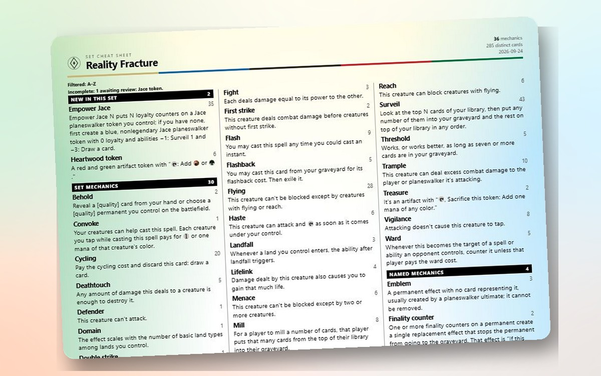
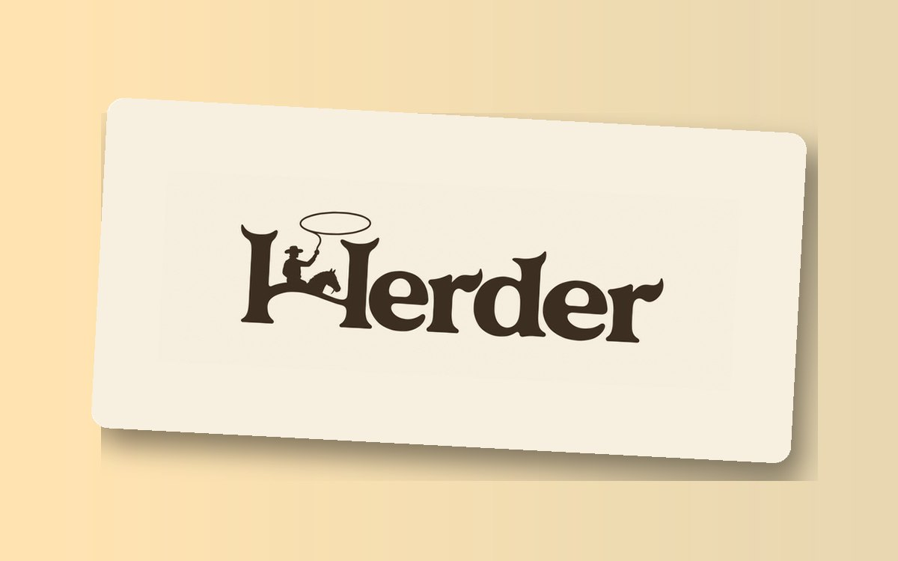
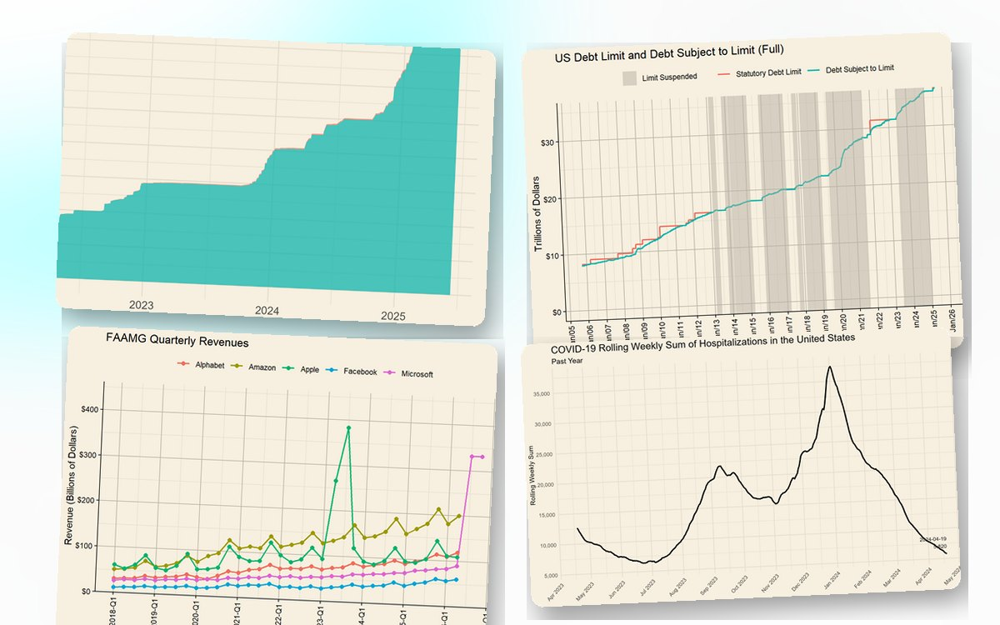
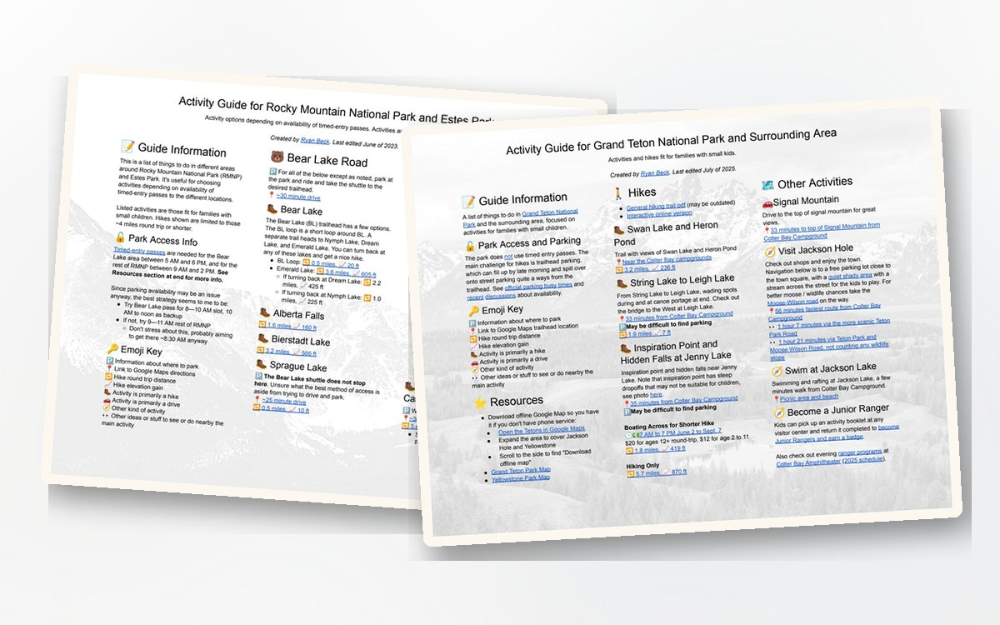
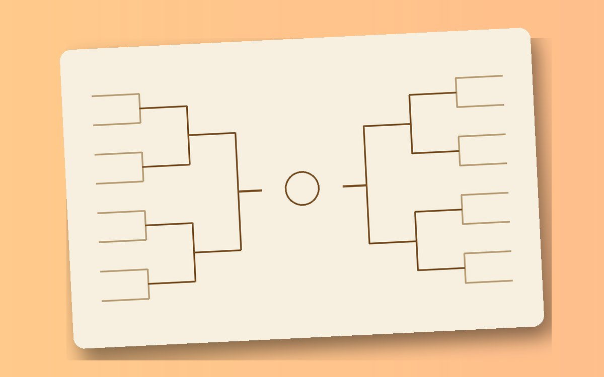

Projects
Stuff I've created that I thought would be handy and may be handy for you too.

MTG Cheat Sheet
Find Magic: The Gathering mechanics for a set, format, or deck and print a compact reference sheet.

Herder
An app for herding a group toward a plan: propose activities, vote on them (ranked-choice if you like) and schedule around everyone's availability. Share a link; nobody needs an account.

Data Dashboards
Most of these were initially created to help with forecasting, but they tend to be genuinely interesting and useful data sources that were in need of nice visuals. Up to date (where possible) dashboards on the debt limit, refugee admissions, respiratory disease trends, semiconductor trade, the bird-flu cull, and more.

National Park Guides
I love visiting Grand Teton National Park and Rocky Mountain national park, and wanted a reusable activity planning aid for families with small kids so I didn't have to recall anew each time what options there are. Short hikes, parking strategy, drive times, and more details.

March Madness
Making a bracket is fun, but if you're like me and know absolutely nothing about the teams involved or their general stats, this is for you. A bracket builder with relevant season stats, head to head histories, and some (shaky at best) power ratings all in one place.